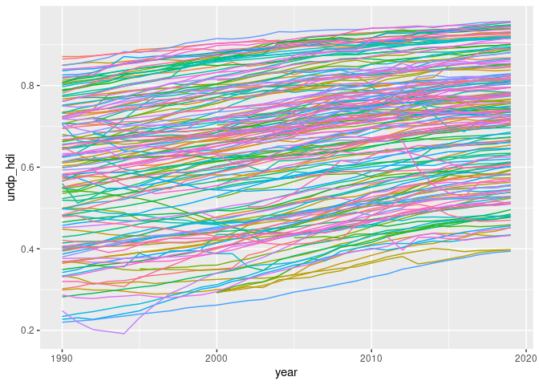

rqog-package: download data from the Quality of Government Institute data
Download the latest and archived datasets from the Quality of Government Institute using the function read_qog(). See ?read_qog for help, package vignette for more examples and data.markuskainu.fi/qog/ for interactive metadata.
Installation
devtools::install_github("ropengov/rqog")Use
Download data
Browse metadata
library(rqog)
meta_std_ts_2021[grepl("human development", meta_std_ts_2021$name, ignore.case = TRUE),]
#> # A tibble: 2 x 5
#> code name value label class
#> <chr> <chr> <dbl> <chr> <chr>
#> 1 iiag_hd Human Development NA <NA> numeric
#> 2 undp_hdi Human Development Index NA <NA> numericPlot an indicator
library(ggplot2)
ggplot(dat[!is.na(dat$undp_hdi),],
aes(x = year, y = undp_hdi, color = cname)) +
geom_line() +
theme(legend.position = "none")
Copyright (C) 2012-2021 Markus Kainu markuskainu@gmail.com. MIT-licence.
Disclaimer
This package is in no way officially related to or endorsed by Quality of Government Institute.